方奕梓 · 视觉内容创作者PORTFOLIO / 2026
方奕梓 Zaki
01 / SELECTED MOTION个人作品混剪
点击声音按钮，开启声音
V01 · SHOWREEL
把想法，变成被看见的作品。
02 / SELECTED PROJECTS
作品。各有表达。
从品牌叙事到产品细节，
让审美与商业目标同频。
02 / PRODUCT STILLS
产品定格。细节有光。
服装平面 / 人像影像 / 商业摄影
日常穿行。
02 / 06色彩与质感。
03 / 06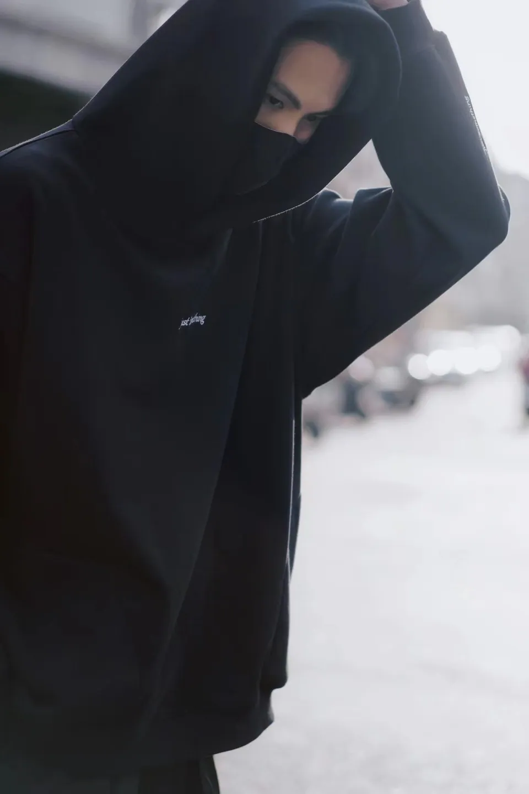
街头近景。
04 / 06建筑之间。
05 / 06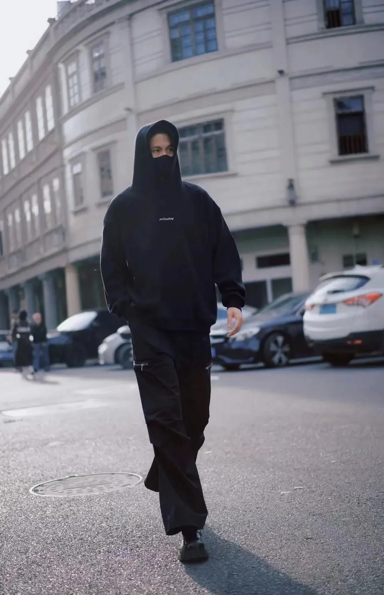
城市步履。
06 / 0603 / CELEBRITY COLLABORATIONS
明星合作。各有光芒。
品牌代言 / 卖点表达 / 拍摄花絮
明星合作 / 03移入画面，放大并播放轻触播放，查看作品
点击声音按钮，开启声音
章若楠
代言拍摄花絮
点击声音按钮，开启声音
李兰迪
商品卖点呈现
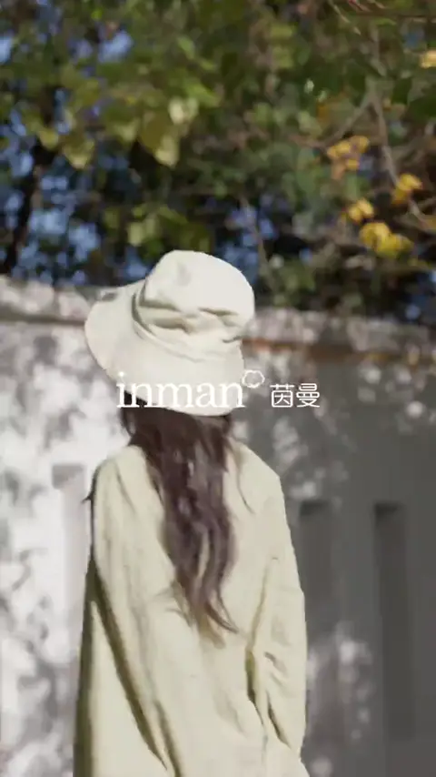
点击声音按钮，开启声音李一桐和赵昭仪
代言拍摄花絮
04 / BRAND FILMS
品牌宣传片。故事有回响。
品牌文化 / 人文故事 / 主题影像
点击声音按钮，开启声音
新中式
东方美学 / 新中式表达
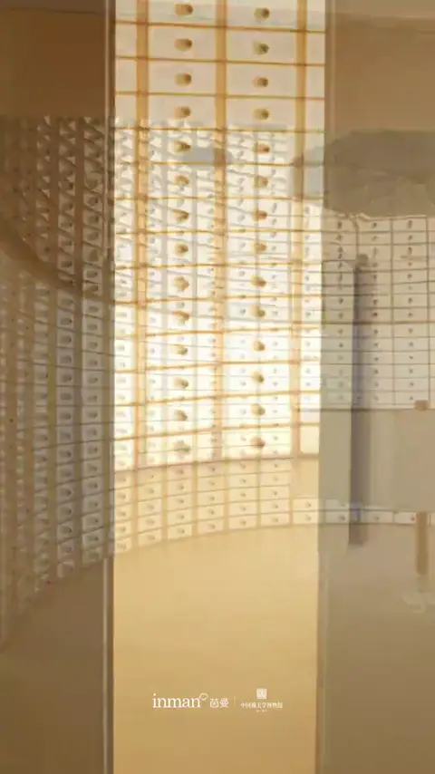
点击声音按钮，开启声音博物馆
品牌文化 / 博物馆影像
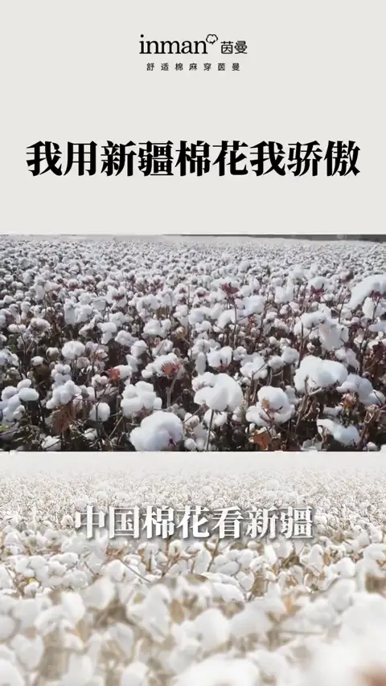
点击声音按钮，开启声音中国棉
中国棉 / 品牌故事
05 / AI MOTION
好奇心。不止于镜头。
服装、场景与新的表达。
用 AI 探索影像的更多可能。
AI 影像 / 10移入画面，放大并播放轻触播放，查看作品
点击声音按钮，开启声音
蓝调日常。
藏青与天空蓝 / 都市穿搭
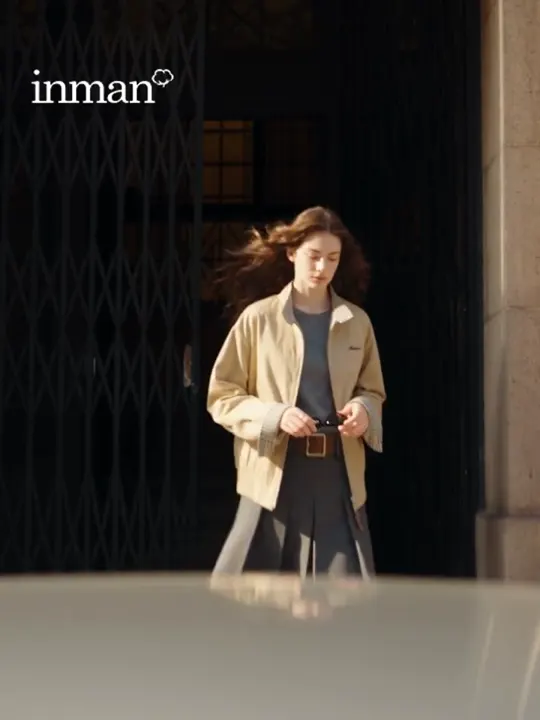
点击声音按钮，开启声音日常有序。
卡其与灰 / 服装表达
点击声音按钮，开启声音
丹宁漫游。
丹宁与配饰 / 街头叙事
点击声音按钮，开启声音
自然叙事。
自然场景 / 服装细节
点击声音按钮，开启声音
城市之间。
建筑空间 / 竖屏影像
点击声音按钮，开启声音
AI 影像 06
服装视觉 / AI 影像
点击声音按钮，开启声音
AI 影像 07
品牌表达 / AI 影像
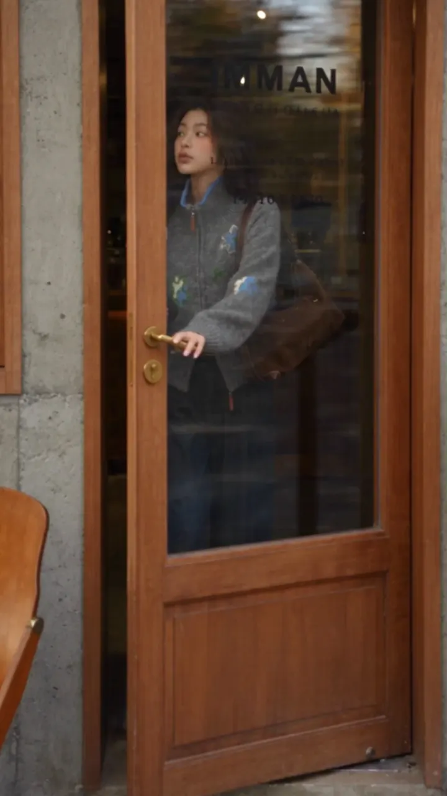
点击声音按钮，开启声音AI 影像 08
人物与场景 / AI 影像
点击声音按钮，开启声音
AI 影像 09
动态创意 / AI 影像
点击声音按钮，开启声音
AI 影像 10
3:4 视觉实验 / AI 影像
06 / AI × BRAND IDEAS
品牌的想象。不设边界。
从一页手账到一个创意世界。
让品牌以新的方式被看见。
AI × 品牌创意 / 04移入画面，放大并播放轻触播放，查看作品
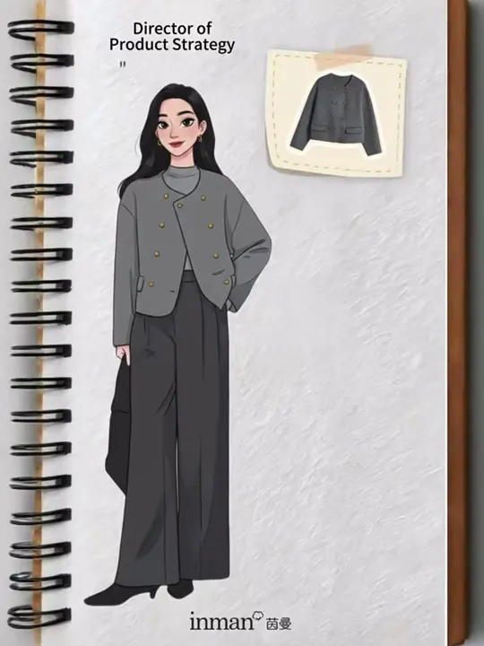
点击声音按钮，开启声音灵感，翻开新一页。
插画手账 / 服装与人物
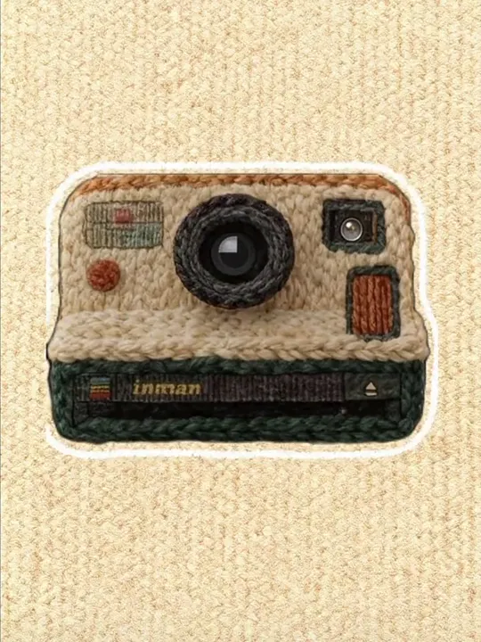
点击声音按钮，开启声音把想象，织成形。
材质实验 / 针织相机
点击声音按钮，开启声音
节日，住进创意。
节日场景 / 品牌叙事
点击声音按钮，开启声音
让画面，跳出边界。
社交界面 / 动态视觉
07 / VISUAL ARCHIVE
更多画面。更多可能。
穿搭、创意、卖点与剧情。
以不同的方式，讲述服装。
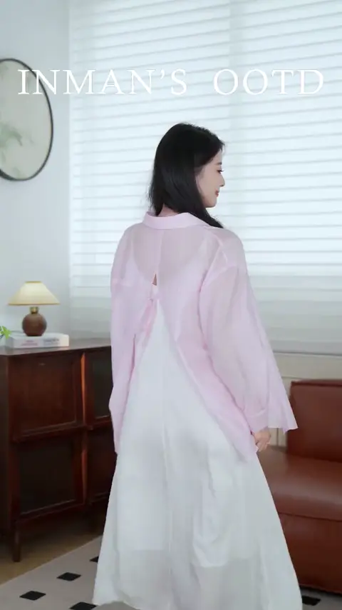
点击声音按钮，开启声音OOTD / MOTION
01日常穿搭
OOTD / 服装内容
点击声音按钮，开启声音
创意内容 / MOTION
02分屏创意
创意内容 / 服装内容
点击声音按钮，开启声音
走拍 / MOTION
03街头走拍
走拍 / 服装内容
点击声音按钮，开启声音
商品卖点 / MOTION
04细节与卖点
商品卖点 / 服装内容
点击声音按钮，开启声音
创意内容 / MOTION
05穿搭新意
创意内容 / 服装内容
点击声音按钮，开启声音
创意内容 / MOTION
06大理城市大片
创意内容 / 服装内容
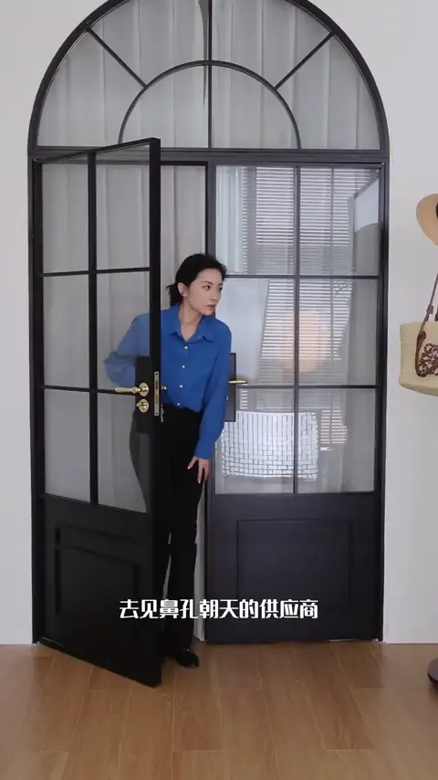
点击声音按钮，开启声音个人 IP / MOTION
07个人 IP 内容
个人 IP / 服装内容
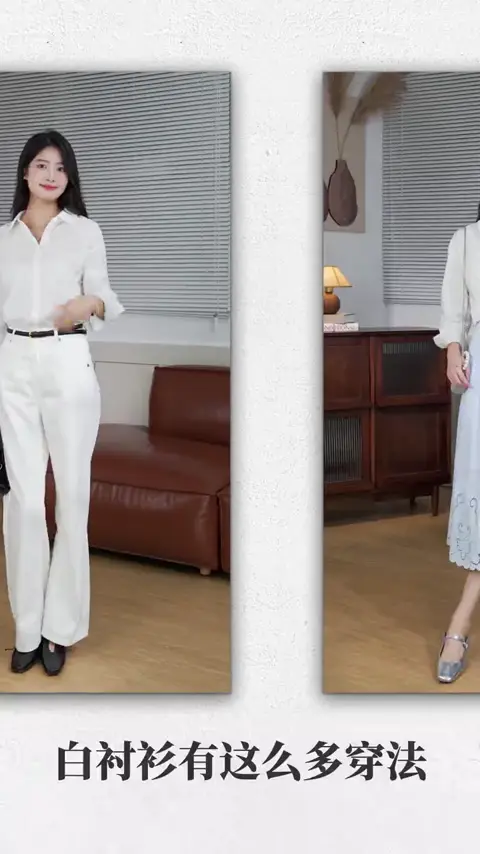
点击声音按钮，开启声音商品卖点 / MOTION
08大单品卖点
商品卖点 / 服装内容
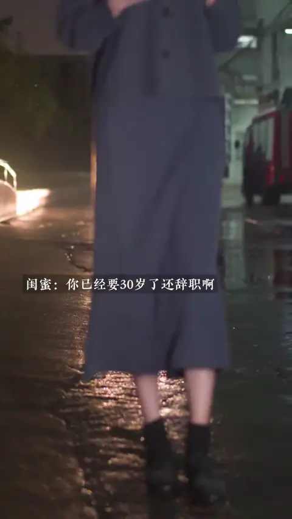
点击声音按钮，开启声音剧情 / MOTION
09剧情短片
剧情 / 服装内容
点击声音按钮，开启声音
商品卖点 / MOTION
10针织衫口播
口播 / 针织衫卖点
点击声音按钮，开启声音
商品卖点 / MOTION
11抗皱测试
产品演示 / 抗皱性能
点击声音按钮，开启声音
OOTD / MOTION
12套装穿搭
套装 / 穿搭展示
STILLS / MOTION / EXPLORATIONS12 个展示位 · 可持续添加
08 / BEHIND THE WORK有审美的表达。
有审美的表达。
有运营思维的创作。
从摄影助理到独立拍摄与内容策划，深耕服装电商。
我关注画面，也关注画面背后的品牌表达与转化。
6年+服装影像与内容经验
百万级“中国棉”内容最高浏览
万级相关内容互动表现
No.1新疆棉大秀当日小红书品牌榜场观
项目表现据个人简历整理，待补充对应作品与数据截图。
职业经历
EXPERIENCE
EXPERIENCE
茵曼 INMAN
2022.03 — 2026.09内容策划 · 拍摄 · 剪辑后期
汇美时尚集团股份有限公司
从抖音信息流、剧情短片，到视频号、淘宝与小红书的品牌内容。参与“中国棉”内容创作、新疆棉大秀同步直播，以及广州时装周、芒果台大场直播的灯光与场景协作。持续探索 AI 工作流与商业视觉应用。
Eggka
2021.01 — 2022.03内容运营 · 产品拍摄
黑田贸易
从手机拍摄到独立使用相机与灯光，完成产品摄剪，并逐步负责主店铺账号内容运营与视频制作。以达人女装内容积累短视频叙事和平台传播经验。
White
2020.06 — 2021.01拍摄助理 · 视频后期
广州润登服装有限公司
参与服装平面、品牌 Vlog 与产品视频制作，在极简品牌调性中建立审美基础，学习信息流内容的拍摄与传播方式。
UNIQLO 优衣库
2016 — 2020辅助店铺运营 · 在校兼职
讯销商业有限公司
在校期间持续参与店铺运营，积累服装行业观察、产品理解与流行趋势敏感度。
创作工具
TOOLBOX
TOOLBOX
影像与后期
Premiere Pro / Photoshop / DaVinci / 剪映
AI 创作
ComfyUI / AI 图像与视频 / Skills
拍摄与空间
相机拍摄 / 直播灯光 / CAD / 3ds Max
教育经历
EDUCATION
EDUCATION
北京理工大学珠海学院
2016 — 2020专：工商企业管理 & 行政管理
本：环境艺术设计